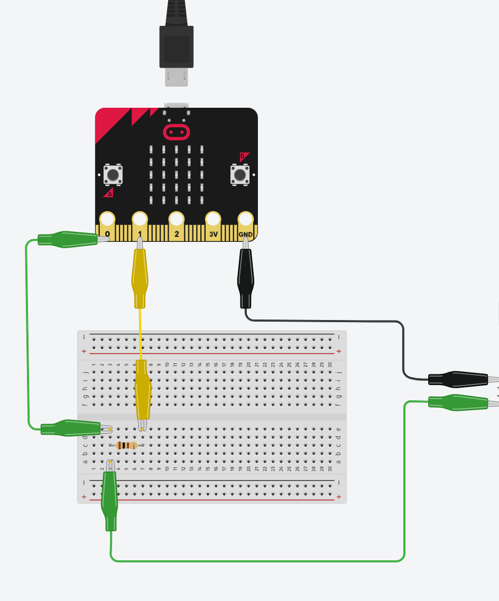

1
Voorspel
Leerlingen formuleren een onderzoeksvraag en een hypothese.
Project Wind J2
Bouw, meet en vergelijk. Leerlingen leren hoe een windmolen elektrische energie opwekt en gebruiken de micro:bit om spanning, stroom, vermogen en energie te onderzoeken.
Hoe werkt het?
De opdracht begeleidt leerlingen door dezelfde stappen als een klein onderzoek: voorspellen, bouwen, kalibreren, meten, vergelijken en besluiten. De app draait als gewone website en werkt met WebSerial in Chrome of Edge. Geen installatie, geen leerlingenaccounts.
Leerlingen formuleren een onderzoeksvraag en een hypothese.
De micro:bit stuurt live data naar de browser. De app toont spanning, stroom, vermogen en energie.
Meerdere proeven komen samen in één grafiek en in een PDF-rapport dat leerlingen kunnen indienen.
De opstelling
De windmolen wordt een generator. De micro:bit leest de spanning en stroom uit, waarna de browser berekent hoeveel vermogen en energie de opstelling oplevert.

Wat leer je?
Leerlingen zien hoe de molen energie genereert, de micro:bit meet en hoe deze data gevisualiseerd wordt.
We visualiseren beide begrippen via grafieken en koppelen dit aan een gekende casus: het opladen van jouw smartphone.
De app maakt zichtbaar wat P = V * I en E = som(P * dt) betekenen.
Leerlingen vergelijken proeven en schrijven een besluit op basis van data.
Voor leerkrachten
De opdracht is gemaakt voor leerlingen van ongeveer 13-14 jaar oud. De interface helpt leerlingen stap voor stap zonder van de fysieke windmolen weg te trekken.
Privacy
De app draait lokaal in de browser. Meetgegevens blijven op het toestel en worden alleen geëxporteerd wanneer een leerling zelf een CSV of PDF downloadt.
Start de meting, test de demomodus of laat leerlingen hun proeven vergelijken en rapporteren.